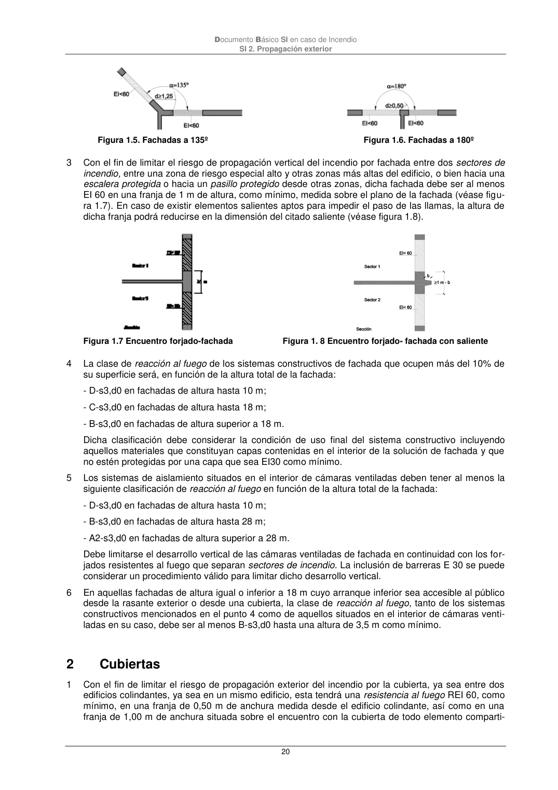
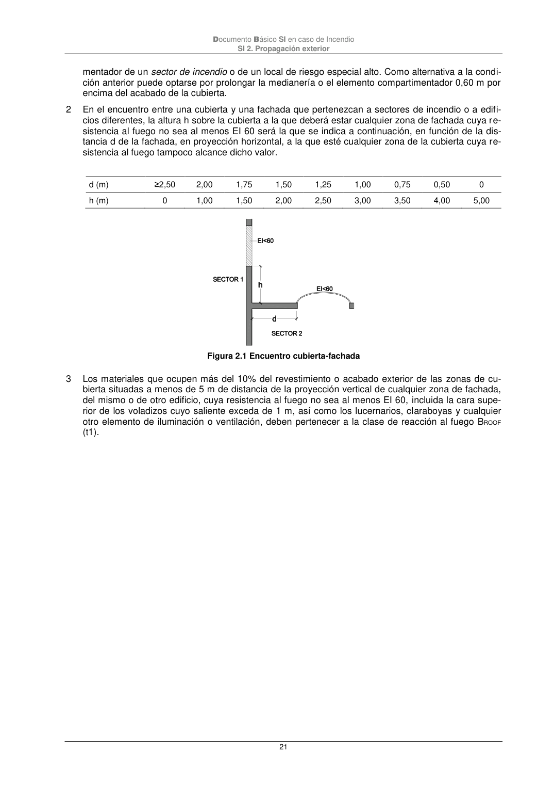

DB-SI Seguridad en caso de incendio · edición 2025-03-04 · capa oficial
Documento DB-SI-oficial · SHA-256 del PDF 0a2e78cd62471d9cc5cfe2efbc6aa39fdbad73c124aea7b039f9de96c141e105
Copia fiel del PDF fuente · Fuente oficial
Ficha de la disposición en la fuente oficial
Formatos: JSON del segmento · Markdown
Cubiertas 1 Con el fin de limitar el riesgo de propagación exterior del incendio por la cubierta, ya sea entre dos edificios colindantes, ya sea en un mismo edificio, esta tendrá una resistencia al fuego REI 60, como mínimo, en una franja de 0,50 m de anchura medida desde el edificio colindante, así como en una franja de 1,00 m de anchura situada sobre el encuentro con la cubierta de todo elemento comparti- Documento Básico SI en caso de Incendio SI 2. Propagación exterior 21 mentador de un sector de incendio o de un local de riesgo especial alto. Como alternativa a la condi- ción anterior puede optarse por prolongar la medianería o el elemento compartimentador 0,60 m por encima del acabado de la cubierta. 2 En el encuentro entre una cubierta y una fachada que pertenezcan a sectores de incendio o a edifi- cios diferentes, la altura h sobre la cubierta a la que deberá estar cualquier zona de fachada cuya re- sistencia al fuego no sea al menos EI 60 será la que se indica a continuación, en función de la dis- tancia d de la fachada, en proyección horizontal, a la que esté cualquier zona de la cubierta cuya re- sistencia al fuego tampoco alcance dicho valor. d (m) ≥2,50 2,00 1,75 1,50 1,25 1,00 0,75 0,50 0 h (m) 0 1,00 1,50 2,00 2,50 3,00 3,50 4,00 5,00 Figura 2.1 Encuentro cubierta-fachada 3 Los materiales que ocupen más del 10% del revestimiento o acabado exterior de las zonas de cu- bierta situadas a menos de 5 m de distancia de la proyección vertical de cualquier zona de fachada, del mismo o de otro edificio, cuya resistencia al fuego no sea al menos EI 60, incluida la cara supe- rior de los voladizos cuyo saliente exceda de 1 m, así como los lucernarios, claraboyas y cualquier otro elemento de iluminación o ventilación, deben pertenecer a la clase de reacción al fuego BROOF (t1). Documento Básico SI en caso de Incendio SI 3. Evacuación de ocupantes 22

